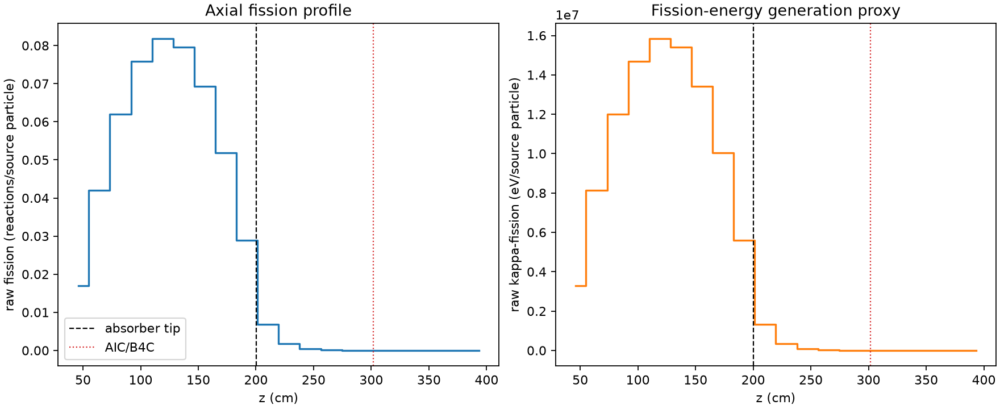
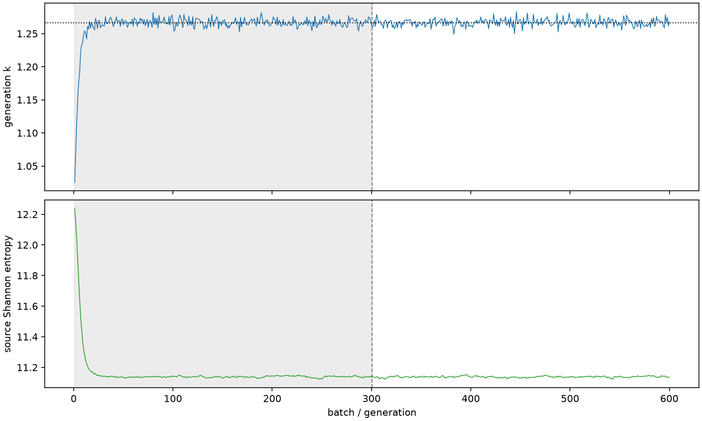

| field | value |
|---|---|
| experiment | V2-STAGE_256_OGRENCI_01-0016 |
| k | 1.266611330351675 |
| MC standard error | 0.00019706177680629727 |
| seconds | 952.2583679759991 |
| acceptance | not_assessed |
| convergence | review_required |
Completed is output integrity only; physical and statistical review required. Zero tallies do not prove zero production or zero uncertainty.
| diagnostic | value |
|---|---|
| geometric fuel voxels | 5280 |
| zero fission tally voxels | 610 |
| low signal fuel voxels | 1853 |
| low signal fission share | 8.78019798414263e-05 |
| low signal kappa share | 8.782640409529848e-05 |
| important fission share | 0.9500296992943749 |
| previous filter included | 3427 |
| duration estimate s | 1562.5173488400023 |
| actual minus estimate s | -610.2589808640032 |
| fission relative MC error | statistics |
|---|---|
| all_geometric_fuel | {"voxels": 5280, "positive_mean_voxels": 4670, "zero_mean_voxels": 610, "undefined_relative_error_voxels": 610, "median": 0.014822660789676029, "p95": 1.0, "maximum": 1.0000000000000002} |
| low_signal | {"voxels": 1853, "positive_mean_voxels": 1243, "zero_mean_voxels": 610, "undefined_relative_error_voxels": 610, "median": 0.7024383909226113, "p95": 1.0, "maximum": 1.0000000000000002} |
| important_95pct | {"voxels": 2118, "positive_mean_voxels": 2118, "zero_mean_voxels": 0, "undefined_relative_error_voxels": 0, "median": 0.007095656153687977, "p95": 0.010678205935521762, "maximum": 0.013897113651886842} |
| outside_previous_filter | {"voxels": 1853, "positive_mean_voxels": 1243, "zero_mean_voxels": 610, "undefined_relative_error_voxels": 610, "median": 0.7024383909226113, "p95": 1.0, "maximum": 1.0000000000000002} |
| kappa_fission relative MC error | statistics |
|---|---|
| all_geometric_fuel | {"voxels": 5280, "positive_mean_voxels": 4670, "zero_mean_voxels": 610, "undefined_relative_error_voxels": 610, "median": 0.014805026000932715, "p95": 1.0, "maximum": 1.0000000000000002} |
| low_signal | {"voxels": 1853, "positive_mean_voxels": 1243, "zero_mean_voxels": 610, "undefined_relative_error_voxels": 610, "median": 0.7026111272168563, "p95": 1.0, "maximum": 1.0000000000000002} |
| important_95pct | {"voxels": 2118, "positive_mean_voxels": 2118, "zero_mean_voxels": 0, "undefined_relative_error_voxels": 0, "median": 0.007087819233852265, "p95": 0.010666606768984819, "maximum": 0.013882017291775198} |
| outside_previous_filter | {"voxels": 1853, "positive_mean_voxels": 1243, "zero_mean_voxels": 610, "undefined_relative_error_voxels": 610, "median": 0.7026111272168563, "p95": 1.0, "maximum": 1.0000000000000002} |
| axial bin | fission share | kappa-fission share |
|---|---|---|
| 1 | 0.03287699546354148 | 0.032878302966514575 |
| 2 | 0.08111717284628478 | 0.08111655742321607 |
| 3 | 0.11977752860563749 | 0.11977662669592613 |
| 4 | 0.14652882945335485 | 0.1465277514274043 |
| 5 | 0.15801371083367677 | 0.15801259443209673 |
| 6 | 0.1538382809608293 | 0.1538370166392021 |
| 7 | 0.13387342153321458 | 0.13387228563966322 |
| 8 | 0.10027901721226283 | 0.10027829587076288 |
| 9 | 0.05580766316528689 | 0.055807925911970084 |
| 10 | 0.013319393990266023 | 0.013323246559508858 |
| 11 | 0.0033754672519007685 | 0.00337649278145619 |
| 12 | 0.0008726695445203933 | 0.0008729595475431275 |
| 13 | 0.0002377977928936294 | 0.00023786767576022025 |
| 14 | 6.140103132423729e-05 | 6.142286388173505e-05 |
| 15 | 1.632199358181788e-05 | 1.6324972334268448e-05 |
| 16 | 2.787168856233352e-06 | 2.7873919480151155e-06 |
| 17 | 3.854943050073298e-07 | 3.859244955362576e-07 |
| 18 | 1.391774996676298e-07 | 1.3918462489818704e-07 |
| 19 | 7.845251780640696e-07 | 7.84093348773607e-07 |
| 20 | 2.319555852079013e-07 | 2.3199834240895164e-07 |
Histories include the inactive-to-active transition at batch 300. kappa-fission approximates fission energy production, not total heat deposition.

